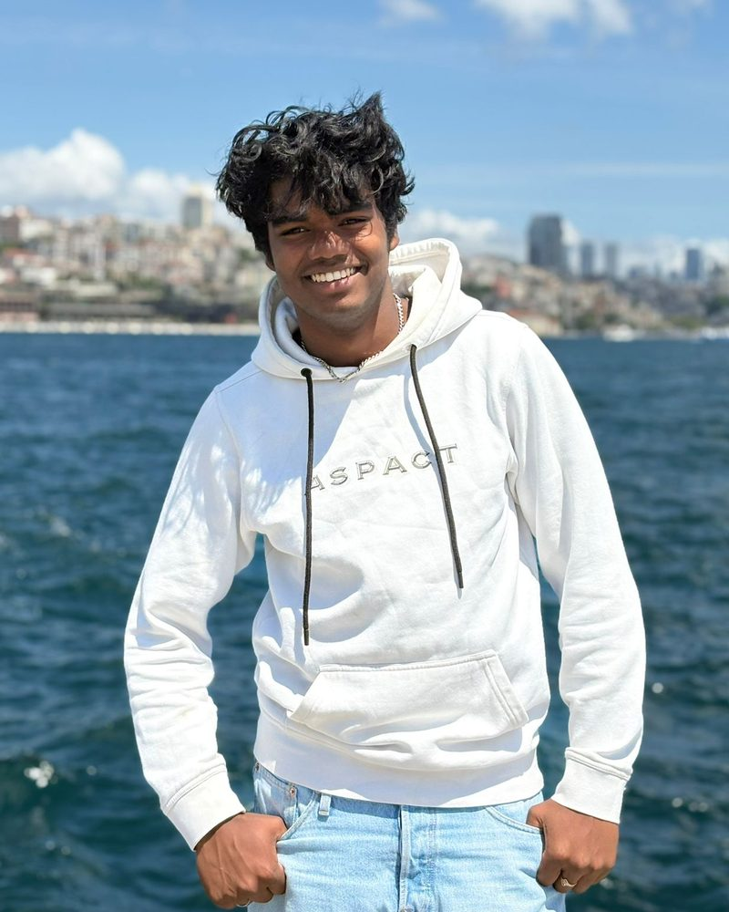

Webbureau & eigen software
Websites die werken.
Apps die we zelf bouwen.
Deekman Enterprises bouwt websites voor ondernemers, houdt ze vindbaar met SEO en SEA, en maakt eigen software — van een website-dashboard voor onze klanten tot een studie-app met AI.
Of doe eerst de gratis website-check →[aantal] websites zijn je al voorgegaan met onze gratis website-check. Hoe scoort die van jou?
Check jouw website →Wat we doen
Alles voor een website die gevonden wordt — en blijft draaien.
Websites bouwen
Op maat gemaakt en snel. Je geeft je wensen door in onze website-bouwer en ziet meteen een voorbeeld.
SEO & SEA
Hoger in Google, organisch en met advertenties. We volgen zoekwoorden per pagina en sturen bij.
Content & social
Teksten, blogs en posts die passen bij je merk en die je klanten echt lezen.
Techniek & onderhoud
Hosting, updates en beveiliging. Wij houden je site in de gaten, zodat jij dat niet hoeft.
Begin zelf
Ontdek in twee minuten wat er voor jouw website mogelijk is
Eigen apps
We bouwen niet alleen voor klanten. We bouwen ook voor onszelf.
Het dashboard waarin onze klanten zien hoe hun website presteert: bezoekers, SEO-score, zoekwoorden per pagina en hoe ze het doen tegenover concurrenten.
paginapuls.deekmanenterprises.com
Meer over Paginapuls →De studie-app waarmee studenten met hun eigen lesstof leren: oefentoetsen, flashcards en gesprekken oefenen met AI. Docenten zetten opdrachten klaar voor hun klas.
leerpuls.deekmanenterprises.com
Zo werken we
Van wens tot website in drie stappen
-
1
Wensen ophalen
Je vult je wensen in via onze website-bouwer en ziet direct een voorbeeld. Daarna bespreken we het samen.
-
2
Bouwen & live zetten
Wij bouwen de site, richten alles technisch goed in en zetten hem live op jouw eigen domein.
-
3
Meten & verbeteren
In Paginapuls zie je hoe je site het doet. Zakt er iets weg, dan zien wij dat meteen en pakken we het op.

Over ons
Ondernemer sinds zijn zestiende
Deekman Enterprises is opgericht door Thomas Deekman. Op zijn zestiende begon hij zijn eerste bedrijf en sindsdien laat ondernemen hem niet meer los: inmiddels runt hij meerdere bedrijven. Na zijn mbo-opleiding Marketing & Communicatie studeert hij nu Commerciële Economie aan de Hogeschool Leiden.
Die mix van marketing en zelf bouwen zie je terug in alles wat we doen. We kijken niet alleen naar hoe een website eruitziet, maar vooral naar wat hij oplevert. Daarom maken we ook onze eigen software, zoals Paginapuls, zodat je altijd ziet hoe je website presteert. Vanuit Zwijndrecht helpen we ondernemers aan een website die werkt: persoonlijk, snel en zonder ingewikkeld jargon.
Klaar voor een website die meer oplevert?
Vertel ons wat je nodig hebt. We reageren binnen 2 à 3 werkdagen.